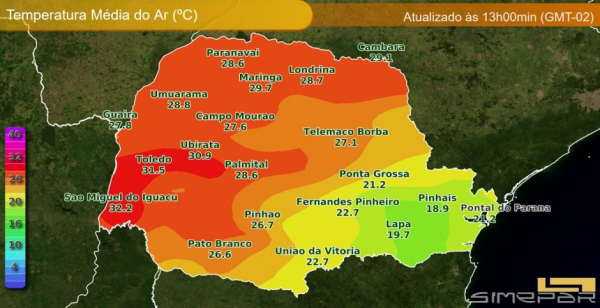
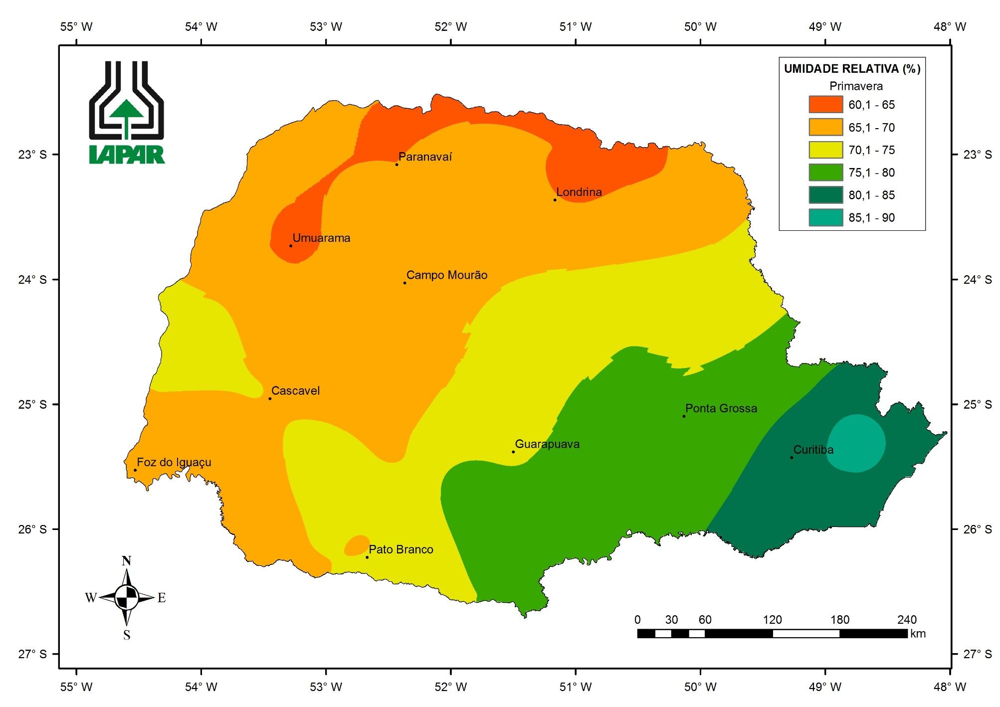
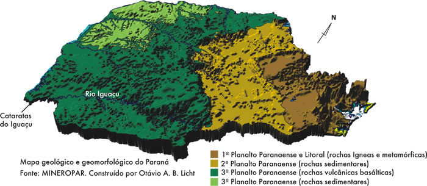
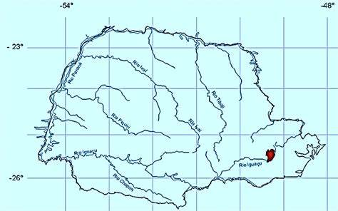

Como é o clima do Paraná
A maioria do território paranaense está situada na região de clima subtropical, onde temperaturas suaves são dominantes. Não obstante o enquadramento das isotermas dentre as menos elevadas do Brasil, diversas vezes as temperaturas absolutas são muito contrastantes.
Confira aqui .
Como é a média de temperatura do estado
Na maioria da parte do território do estado do Paraná, as temperaturas oscilam de 12 °C a 13 °C por ano, menos o litoral, em que as temperaturas percorrem em volta entre 8 °C e 9 °C. O estado paranaense não tem uma estiagem de grande nitidez. As isoietas apresentam média chuvosa de 1 200 mm a 1 900 mm por ano.
Como é a umidade do Paraná
A umidade relativa do ar varia de 30 a 95%. Curitiba, no Paraná, tem tempo encoberto pela manhã e sol entre muitas nuvens à tarde. A temperatura fica entre 12 e 25º C.
Como é o relevo do Paraná
O relevo paranaense é dividido em três planaltos. O primeiro apresenta formações de rochas cristalinas, o segundo de rochas sedimentares e o terceiro é composto por formações basálticas com solo originário de rochas vulcânicas e argilosos de rocas sedimentares. O clima também apresenta três tipos distintos, todos de fundo tropical-úmido.
Como é a hidrografia do Paraná
O que é? A região hidrográfica do Paraná apresenta grande potencial hidrelétrico, abrigando uma das maiores usinas do mundo, a Usina Hidrelétrica de Itaipu. Regiões hidrográficas são espaços territoriais que compreendem uma bacia hidrográfica ou um conjunto de bacias com características naturais e socioeconômicas semelhantes.